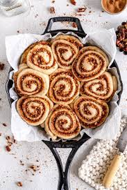

Home
Vegan Cinnamon Rolls

Vegan Cinnamon Rolls by Cloudy Kitchen
These Vegan Cinnamon Rolls are super delicious and
easy to make. They have a soft and fluffy vegan
bread dough make with the Tangzhong method, and
are filled with a cinnamon sugar and candied pecan
mixture.
Ingredients
Candied Pecans
- 125g pecans
- 50g light or dark brown sugar
- 15g Filippo Berio Extra Light Olive Oil
- 1/4 tsp kosher salt
Tangzhong
- 20g bread flour
- 95g oat milk
Vegan Cinnamon Roll Dough
- All of the Tangzhong
- 150g oat milk or other plant based milk, cold
- 30g light or dark brown sugar
- 1 1/2 tsp (6g) instant yeast
- 270g bread flour
- 270g bread flour
Instructions
Candied Pecans
- Preheat the oven to 350°f / 180°c. Spread the pecan
halves out on a baking sheet, and toast for 8-10
minutes or until golden brown (you can snap one
open to check they are toasted throughout). Leave
to cool.
- Line a small baking sheet with a silicone baking
mat or some parchment paper. In a medium saucepan
over medium heat, combine the sugar, oil, and
salt.
- Add the toasted pecan halves and cook, stirring
frequently and adjusting the heat as necessary,
until the sugar has melted and the nuts are evenly
coated in the sugar mixture. Tip out onto the prepared
baking sheet and spread the nuts out with a spatula
so they aren’t clumped together.